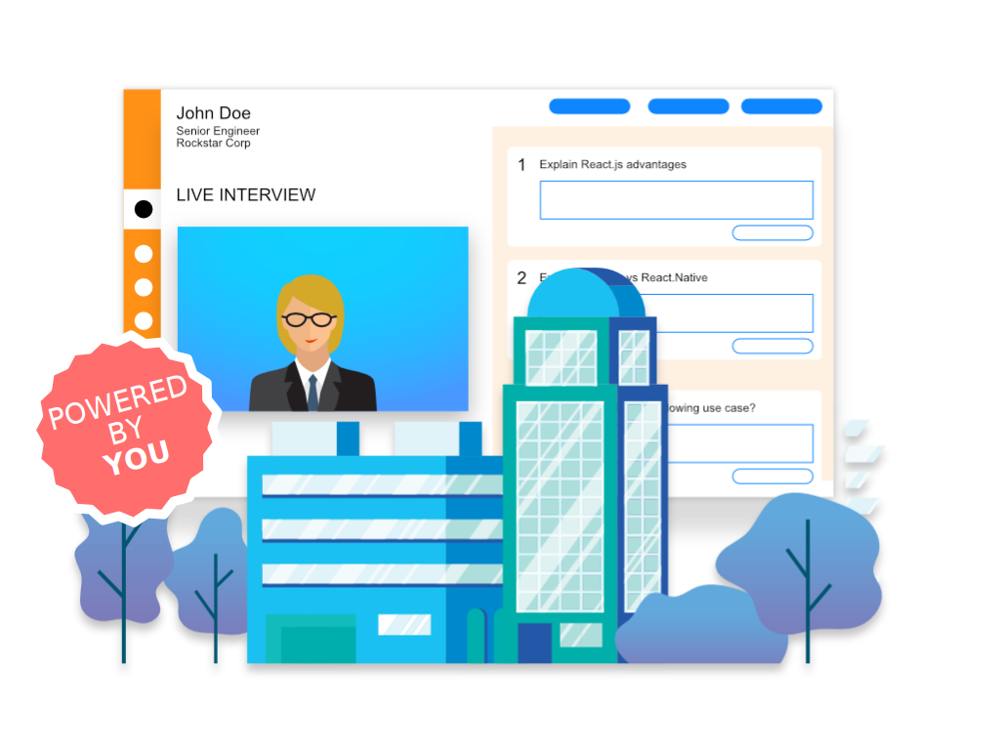

<upnav></upnav>
<mynav></mynav>
<div class="solutions-wrap">
	<div class="nav blue-bg">
		<div>
			<span class="solutions"> Our Solutions </span>
		</div>
		<div class="inner-nav">
			<div class="white-txt">
				<a href="/you-source-we-interview.html" class="white-txt"> YOU SOURCE, WE INTERVIEW</a>
			</div>
			<div class="active-white">
				<a href="/you-source-you-interview.html" class="white-txt-b"> YOU SOURCE, YOU INTERVIEW</a>
			</div>
			<div class="white-txt">
				<a href="/automated-bot-based-interview.html" class="white-txt"> AUTOMATED BOT BASED INTERVIEW </a>
			</div>
			<div class="white-txt">
				<a href="/interview-structuring.html" class="white-txt"> INTERVIEW STRUCTURING </a>
			</div>
		</div>
	</div>
	<div class="sol-info blue-bg">
		<div style="justify-self: center">
			<!-- image -->
			
		</div>
		<div>
			<h3 class="sol-para-title"> YOU SOURCE, YOU INTERVIEW </h3>
			<div style="width: 80%">
				<section class="prod-para m-b-16 left-align-txt">
					For the ease of both the interviewer and the applicant, we offer our online forum for your team to conduct as many interviews as required in
					a more centralized and systematic manner.
				</section>
			</div>
		</div>
	</div>
	<div class="demo-sol blue-bg"> &nbsp; </div>
	<div class="demo-section sol-demo-up">
		<demo></demo>
	</div>
	<stats></stats>
</div>

<myfooter></myfooter>
